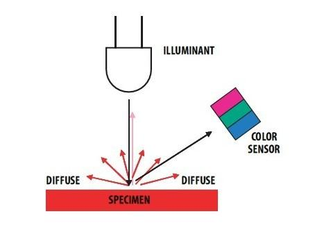

This module is based on the color sensor TCS3414CS with digital output I2C. Based on the 8*2 array of filtered photodiodes and 16-bit analog-to-digital converters, you can measure the color chromaticity of ambient light or the color of objects. Of the 16 photodiodes, 4 have red filters, 4 have green filters, 4 have blue filters and 4 have no filter(clear). With the synchronization input pin, an external pulsed light source can provide precise synchronous conversion control.

| Parameter | Value/Range |
|---|---|
| PCB Size | 2.0 cm * 4.0 cm |
| Interface | 2.0mm pitch pin header |
| VCC | 3.3 - 6.0 V |
| I2C Speed | 400 kHz |
Following documents help in getting the user started with Grove.
Grove products have an eco system and all have the same connector which can plug onto the Base Shield. Connect this module to the I2C port of Base Shield. However, you can also connect Grove - I2C Color Sensor to Arduino without Base Shield by jumper wires.
| Arduino UNO | Grove - I2C Color Sensor |
|---|---|
| 5V | VCC |
| GND | GND |
| SDA | SDA |
| SCL | SCL |
This module can be used to detect the color of light source or the color of objects. When used to detect the color of the light source, the led switch should be turned off, and the light source should shine the sensor directly. When used to detect the color of things, the led should be on and you should put the object on the top of the enclosure closely. The theory of sensing the color of objects is Reflective Sensing Theory. Like the picture below.

We have created a library to help you start playing quickly with the Seeeduino/Arduino, in this section we'll show you how to set up the library.
This is the most important/useful function in the library, we invite you to look at the .h and .cpp files yourself to see all the functions available.
void loop() { int red, green, blue; GroveColorSensor colorSensor; colorSensor.ledStatus = 1; // When turn on the color sensor LED, ledStatus = 1; When turn off the color sensor LED, ledStatus = 0. while(1) { colorSensor.readRGB(&red, &green, &blue); //Read RGB values to variables. delay(300); Serial.print("The RGB value are: RGB( "); Serial.print(red,DEC); Serial.print(", "); Serial.print(green,DEC); Serial.print(", "); Serial.print(blue,DEC); Serial.println(" )"); colorSensor.clearInterrupt(); } }
This example shows how to use features of Grove - I2C Color Sensor and display the detected color with a Chainable RGB LED Grove .
Notice: If you haven't downloaded Grove-Chainable RGB LED library to your Arduino IDE before, please download and set up the library first.
Description: This example can measure the color chromaticity of ambient light or the color of objects, and via Chainable RGB LED Grove, display the detected color.
You also can use other display modules to display the detected color by Grove - I2C Color Sensor.
#include <Wire.h> #include <GroveColorSensor.h> #include <ChainableLED.h> #define CLK_PIN 7 #define DATA_PIN 8 #define NUM_LEDS 1 //The number of Chainable RGB LED ChainableLED leds(CLK_PIN, DATA_PIN, NUM_LEDS); void setup() { Serial.begin(9600); Wire.begin(); } void loop() { int red, green, blue; GroveColorSensor colorSensor; colorSensor.ledStatus = 1; // When turn on the color sensor LED, ledStatus = 1; When turn off the color sensor LED, ledStatus = 0. while(1) { colorSensor.readRGB(&red, &green, &blue); //Read RGB values to variables. delay(300); Serial.print("The RGB value are: RGB( "); Serial.print(red,DEC); Serial.print(", "); Serial.print(green,DEC); Serial.print(", "); Serial.print(blue,DEC); Serial.println(" )"); colorSensor.clearInterrupt(); for(int i = 0; i<NUM_LEDS; i++) { leds.setColorRGB(i, red, green, blue); } } }
This module is based on the color sensor TCS3414CS. The TCS3414CS digital color sensor returns data from four channels: red(R), green(G), blue(B) and clear(C)(non-filtered). The response from the red, green and blue channels (RGB) can be used to determine a particular source’s chromaticity coordinates (x, y). These standards are set by the Commission Internationale de l’Eclairage (CIE). The CIE is the main international organization concerned with color and color measurement.In order to acquire the color of a given object using TCS3414CS, we must first map the sensor response (RGB) to the CIE tristimulus values (XYZ). It is then necessary to calculate the chromaticity coordinates (x, y).